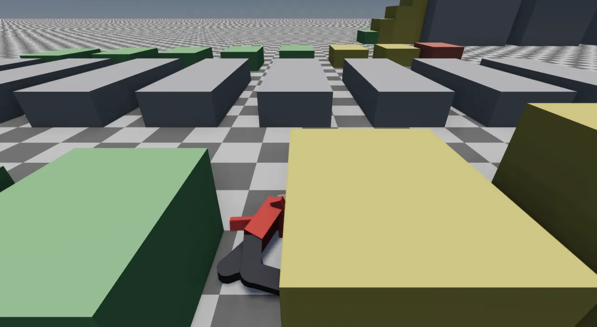
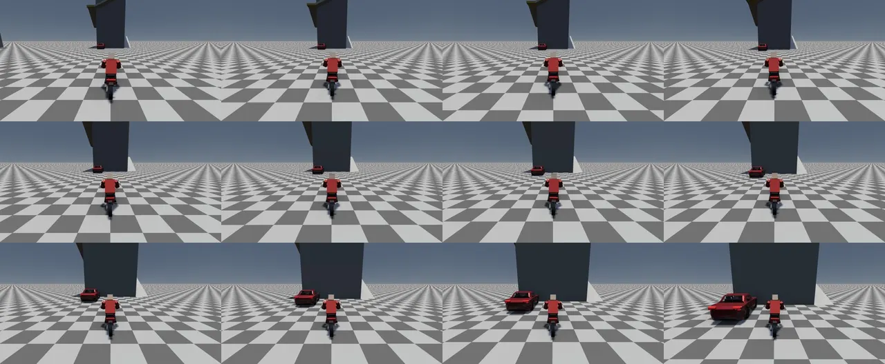

A change is done when its gates pass: about 1,800 headless test cases in four binaries, the levels themselves loaded and judged, a mesh audit over every producer, and a scripted player replayed step by step. Beyond the tests, a running viewer answers a socket, so probe scripts can walk, fly, drive and photograph the real game and read back where each frame's time went.
Most of what this engine makes is generated: cities, roads, buildings, trees, terrain. A bug in a generator
is rarely a crash. It is a lamp post standing in the road, a deck you can see through from below, a car that
flips lanes, a frame that hitches once every two seconds. None of these is visible to a unit test of one function,
and most are invisible from the overhead camera a programmer tends to check from. Three rules in
AGENTS.md shape the answer:
CLAUDE.md on
docs/knowledge-retention-plan.md).editor_app, the acceptance gate, because the viewer is a
different host.In this project's vocabulary a gate is an automated test that must pass; "adding a gate" means adding a
test so a bug cannot silently come back. A commit's definition of done is "the gates are green": in practice
run_tests and physics_tests for every change (the memory notes call these the commit
gate), lanes_tests for road work, and level_tests when a change touches what levels
build.
Structure. Case counts are TEST_CASE lines at the pinned commit (run_tests' count
includes the scripting and audio files compiled in when those modules are on). editor_qt_tests is built
only where CMake finds Qt 6, which the CI runners do not install, so push CI runs the other four; the nightly
reruns the level suite with the heavy levels in.
They are separate binaries for cost, not taste. CMakeLists.txt says it of level_tests:
it "runs the real procgen for all … levels in assets/levels, which costs minutes where the unit suite costs
seconds. Folding it into run_tests would make the fast loop slow enough that people stop running it — and a gate
nobody runs is the failure this whole file guards against." physics_tests is the one that links
Jolt; level_tests is deliberately Jolt-free and asks its ground questions of the collider components
the loader produced.
The project rule is standard library only, so the harness is home-made. A TEST_CASE registers a
function in a static list at start-up; CHECK counts a failure and carries on, so one run reports
every broken check rather than the first.
#define TEST_CASE(name) \ static void name(); \ static TestRegistrar registrar_##name(#name, name); \ static void name() #define CHECK(cond) \ do { \ if (!(cond)) { \ std::printf(" FAIL %s:%d CHECK(%s)\n", __FILE__, __LINE__, \ #cond); \ ++totalFailedChecks(); \ ++currentCaseFailedChecks(); \ } \ } while (0)
The runner flushes [ RUN ] name before each case so a crash names its culprit, catches exceptions
per case, and honours RT_TEST_FILTER=<substring>, because "the whole suite takes minutes;
iterating on one measurement should not". Test names are sentences
(every_shipped_level_has_collidable_ground_under_the_spawn,
an_impact_is_the_speed_lost_along_the_way_meant), so a red line reads as the broken promise.
Many tests read shipped assets, so run them from the repository root (CMake sets RT_SOURCE_DIR and the
ctest working directory for this).
Engine services were built to be testable without a device: JobSystem{0} runs inline,
AudioBackendMode::Manual mixes into a buffer a test can inspect, ControlBackendMode::Manual
takes pushed lines instead of a socket, NullRenderer satisfies Renderer::create(),
FrameStats::record accepts synthetic frames, and systems such as ScriptSystem and
PhysicsSystem expose a headless tick. This "Manual mode" idiom is why nearly the whole
engine, physics included, runs in CI on machines with no GPU.
tests/test_levels_playable.cpp (4,321 lines) loads every shipped level (64 JSON files in
assets/levels at the pinned commit, plus the lanelab levels) through the real
LevelLoader and holds each to the "Playable Scenes" rule: it loads, it has exactly one player, it has
a collider, there is collidable ground under the spawn and not a building on top of it.
TEST_CASE(every_shipped_level_has_a_collider) {
for (const LevelFacts& f : allLevels()) {
if (!f.loaded) continue;
if (f.weightless) continue; // nothing falls; see LevelFacts
if (f.streamsTerrainColliders) continue; // chunks arrive around the player
if (f.colliders == 0)
std::printf(" level '%s' has NO colliders\n", f.name.c_str());
CHECK(f.colliders > 0);
}
}
Past the five basic rules, the file holds the city's measured promises: road decks never poked by the drawn
terrain, traffic driving on the deck, buses serving the city, cars parking in bays not heaps, front doors facing
their street, furniture never in a road, lot dressing planted on the ground. Some cases only print
(level_print_*, the censuses) and exist to be read when diagnosing.
Where a measured problem is known but its fix is owed, the gate becomes a ratchet: the threshold is the measured value, with the cause in a comment, and the rule is "tighten, never loosen".
// The measured baseline (above). Tighten these, never loosen them. // RE-MEASURED on the LANE-BUILT metro (2026-10-22; metro_v2_test moved to the lanes builder on 10-14, and the // 126 / 1424 / 2433 / 3.6 m above were the lattice city's): 12533-12582 / 32657-32800 / 68896-69079, worst // 4.67 m at (-599, -746), the same on Linux GCC, macOS and local clang. The cause is owed (ADR-0217): lot pads' // feathers lie ON the sidewalk -- a wall at the back of the sidewalk. A RATCHET until then: tighten, never loosen. // THE DRAWN SECTION (ADR-0223): the report measures against the tilted deck and the finish follows it -- 8953 / // 30677 / 69911, worst 4.03 m. LOD 2 reads ~800 more than the ratchet's 69079 because the level-across measure // hid the pokes on every street's LOW edge (the level finish under the same measure: 14998 / 31021 / 70049). CHECK(r.pokes[0] <= 9100); CHECK(r.pokes[1] <= 31000); CHECK(r.pokes[2] <= 70200); CHECK(r.worst[0] <= 4.1);
Some levels take minutes to build cold. The file names them and gives the reason with measurements:
// THE HEAVY LEVELS: over a minute each to build cold on a CI runner (measured on the 2026-09-26 macOS run: // metro_mountain 366 s, metro_planned 323 s, island_8_weathered 168 s, island_8_saltwood 159 s, piedmont 99 s -- // with them the gate never finished inside ctest's 30 minutes, so CI was red on a timeout, not on a finding). // ... // RT_LEVEL_TESTS_SKIP_HEAVY=1 (the push workflow) leaves them out; the nightly workflow runs everything. bool skipHeavy() { const char* e = std::getenv("RT_LEVEL_TESTS_SKIP_HEAVY"); return e && *e && std::string(e) != "0"; } bool isHeavyLevel(const std::string& name) { static const char* kHeavy[] = {"metro_mountain.json", "metro_planned.json", "island_8_weathered.json", "island_8_saltwood.json", "piedmont.json", "island_8_rocky.json", "island_8_nature.json", "piedmont_roads.json", "tree_lab.json", "scale_lab.json"}; // ... }
The timeout that hid everything. A newly tracked big level that is not added
to this list makes the push run time out, and a timeout hides every real failure behind it. That happened from
2026-10-19 to 10-22, when island_8_rocky and island_8_nature had been tracked; both
joined the list, along with piedmont_roads (578 s cold on Linux), tree_lab and
scale_lab. After that the Linux level suite ran 1,264 s of the 1,800 s limit on a green run
(CI run 39876769272). For iterating on one level or one case: RT_LEVELS=river_town and
RT_TEST_FILTER=<case>.
Every triangle the engine generates should face outward, have area, be finite and have unit normals. After
the station turnstiles came out inside-out and the elevated decks could be seen through from below, Glenn asked
that "everything, and I mean everything in this engine should use the same tooling"
(ADR-0172).
engine/mesh_audit.h is that one rule set, applied in three places: the unit tests over every producer
(tests/test_winding.cpp), lanes_tests over every lab road graph, and
rt_bake --audit <bundle> over every mesh a baked level ships.
const Vec3 f = cross(c.position - a.position, b.position - a.position); // ... const Vec3 n = a.normal + b.normal + c.normal; const double cs = n.lengthSquared() > 1e-12 ? dot(normalize(f), normalize(n)) : 1.0; if (cs < -0.3) { // ... } if (cs < -0.9) ++r.flipped;
The engine's front face is clockwise seen from the normal's side, so cross(c − a, b − a)
should point along the vertex normals. A triangle more than 107° away (cos < −0.3) is inward; past
154° (cos < −0.9) it is wholly flipped, a wrong index order rather than a smoothed crease. A test then
sweeps a producer:
TEST_CASE(mesh_audit_every_furniture_piece) {
Audit total;
for (int i = 0; i < kPieceCount; ++i) {
Audit piece;
for (uint32_t variant : {0u, 9u, 42u, 101u}) {
const FurniturePiece& fp = furniturePiece(static_cast<Piece>(i), variant);
for (const RenderMesh& m : fp.mesh) piece.add(audit(m));
}
if (!piece.clean()) printAudit(furniturePieceName(static_cast<Piece>(i)), piece);
total.add(piece);
}
printAudit("ALL FURNITURE", total);
CHECK(total.tris > 1000);
CHECK(total.clean());
}
Note CHECK(total.tris > 1000): a fixture must bite. An audit over an empty list would pass
forever. The level ratchet above opens with the same guard (CHECK(r.samples[0] > 100000)).
What a winding check could not find. The island bake's 2,303 "flipped" deck
triangles were float32 slivers far from the origin, not the see-through bug. The hole under the viaducts was
missing faces: a median wall with no bottom standing on the seam between twin carriageways (8,512 open
on the island). So the audit grew other questions: auditUndersides (every walkable surface more
than 2 m up has something facing down beneath it), auditSeeThrough (a person stands under every
elevated surface and looks up at 45° in eight directions; first hit on a back face means see-through; island_8
went from 34,009 to 2,968 of 1.21 M looks, then lower once "inside a solid" was measured properly), and later
auditFacadeCracks. The fixes went into the shared MeshBuilder emitters, not the call
sites. One lesson recorded in the notes: a test had once encoded the wrong (counter-clockwise) rule, and the code
under test matched it. Check tests against the convention, not just the code.
In October 2026 PlayerSystem had grown to 1,906 lines, one ~470-line fixedUpdate
running ten movement modes. Before splitting it into a state machine of body modes
(ADR-0246),
a safety net was built: tests/test_player_trace.cpp runs the real PlayerSystem
and PhysicsSystem on the real movement_lab level, headless, with a scripted gamepad,
and writes down every fixed step.
Flow. Record the traces before a refactor, change the code, compare. Without either variable the scenarios still run as ordinary tests that check their moves happened.
// One frame the way Application runs one: input, update, a fixed step, render. void frame() { actions.beginFrame(); actions.updateGamepad(pad); FrameContext c = ctx(); if (InteractOffers* o = world.get<InteractOffers>(body())) o->list.clear(); // (the broker clears them) player.update(c); physics.fixedUpdate(c); player.fixedUpdate(c); player.render(c); time += clock.fixedStep(); }
if (baseDir && *baseDir) { std::ifstream f(std::string(baseDir) + "/" + sc.name + ".trace"); CHECK(f.good()); std::string want; int i = 0; bool same = true; while (same && std::getline(f, want)) { std::string why; if (i >= static_cast<int>(lines.size())) { std::printf(" %s: the trace ends at step %d\n", sc.name.c_str(), i); same = false; } else if (!sameLine(lines[i], want, 1e-6, why)) { std::printf(" %s: step %d differs (%s)\n was %s\n now %s\n", sc.name.c_str(), i, why.c_str(), want.c_str(), lines[i].c_str()); same = false; } ++i; } CHECK(same); }
Determinism is what makes this work: the job system has no workers, Jolt runs single-threaded, the pad is
scripted, and the clock is stepped exactly, so the runs are bit-identical. The refactor reproduced all 16
recorded traces exactly. The next change,
ADR-0247
(one impact rule for every mode), was meant to change behaviour, and the traces said exactly how: 14 of
17 scenarios identical; hard_fall the same numbers with a new message; the scooter crash one step
later; the wingsuit's late chute now "crashed the chute" instead of "landed the chute". A new scenario,
wingsuit_crash, measured a 60° dive and is what led to judging a touchdown by what it leaves the body
with. Behaviour change becomes a reviewable diff rather than a feeling.
The trace also found two old bugs, left in place so the refactor's trace would hold and fixed in the commit after: the monkey bars' "off the end" could never fire (the position was clamped every step), and a limp request made while limp dropped the body again as soon as it stood. The ladder is the one mode not covered: movement_lab has no ladder.

Some questions only the whole running game can answer. Does it hitch when you walk down this street? Does anything pop in when you fly over the island at 30 m/s? Does the player fall through the floor here? For those, a probe is a Python script (standard library only) that launches the real viewer, talks to it over the control channel socket, and writes a summary. They run on Glenn's machine, never in CI.
Flow. tools/walk_probe.py, the hitch hunter. The other probes have the same skeleton:
fly_probe.py (what streams in late), fall_probe.py (does the player end up under the
ground), elevator_ride.py, asan_storey_probe.py.
csv_path = os.path.abspath(os.path.join(a.out, "frames.csv")) env = dict(os.environ, RT_FRAME_STATS=csv_path) env.setdefault("RT_VSYNC", "0") log = open(os.path.join(a.out, "viewer.log"), "wb") proc = subprocess.Popen([a.viewer, a.level, "--play"], stdout=log, stderr=subprocess.STDOUT, start_new_session=True, env=env) sock = f"/tmp/raytracer-viewer-{proc.pid}.sock" t0 = time.time() try: while not os.path.exists(sock): if proc.poll() is not None or time.time() - t0 > 60: sys.exit("viewer did not open its control socket") time.sleep(0.2) send(sock, "camera?", timeout=a.load_timeout)
That last line is a trick worth knowing. The socket is open from the start, but commands are only drained at
the top of a frame on the main thread, and the level loads inside one long frame (the state swap). So the first
camera? simply gets no reply until loading is over: the reply is the "level is ready" signal.
Any running viewer or editor can be driven from a shell. tools/viewer_ctl.py sends each argument
as one command to the newest live viewer and prints the reply; nc -U works too. A short session
(reply formats as the code writes them; numbers elided):
$ tools/viewer_ctl.py "info" "teleport -3960 -790" "teleport?" "where?" info -> ok level=assets/levels/… frame=… paused=0 overlay=0 hud=0 ui=0 engine=… teleport -3960 -790 -> ok teleport staged (poll `teleport?`) teleport? -> ok (pending) where? -> ok <x> <y> <z> <pitch> <yaw> $ tools/viewer_ctl.py "hold W 2" "tap Space" "camera?" "shot /tmp/look.png" hold W 2 -> ok hold W staged tap Space -> ok tap Space staged camera? -> ok eye=<x>,<y>,<z> pitch=… yaw=… frame=… shot /tmp/look.png -> ok armed /tmp/look.png $ printf 'ledger summary\n' | nc -U /tmp/raytracer-viewer-*.sock
staged, armed). The result arrives later: poll the matching
? verb (teleport?, possess?) or, for shot, wait for the file,
which lands a frame after.tap <Key> and hold <Key> <seconds> go through the
same InputMap::processEvent as the keyboard, so a probe tests the key Glenn presses, not a side
door. hold counts sim seconds, so it survives a slowed clock.camera? carries frame=, the viewer's own frame counter, because
"socket round-trip jitter was masquerading as 39% camera noise" when a probe divided by its wall clock.
shots <prefix> <n> dumps n consecutive frames for artefacts that live between frames.? question turns on island-wide debug counting for 60 s
(it cost 65-130 ms frames when always on), so fly_probe.py asks info for the frame
number instead of camera?: "the probe would measure itself".if (cmd.name == "tap") { // Press and release a key through the real input path (see the frame // loop). Tests the KEY, not a verb that imitates what the key does. if (cmd.args.empty()) return "err usage: tap <KeyName> (e.g. tap F)"; if (keyCodeFromName(cmd.args[0]) == KeyCode::Unknown) return "err unknown key: " + cmd.args[0]; settingsStore.setString("input.tap", cmd.args[0]); return "ok tap " + cmd.args[0] + " staged"; }

The MCP server tools/viewer-mcp.py wraps the same socket as tools for an agent session
(screenshot, time_of_day, ledger, possess, and a raw
viewer_command escape hatch), and tools/citywalk.py is the director for a possessed
pedestrian. The control channel itself is tested in CI without a socket:
ControlBackendMode::Manual takes pushCommand lines and returns replies from
takeReplies (test_control_channel.cpp),
plus one real Unix-socket smoke pass on POSIX hosts.
The rule (ADR-0008) is to measure before optimising, and the history shows why: the post-processing effects Glenn suspected were nearly free, and the costs were somewhere nobody guessed. The instruments, roughly in the order they are reached for:
| Question | Instrument | How |
|---|---|---|
| Was it slow, and in which phase? | The frame ledger (ADR-0077) | RT_FRAME_STATS=<csv> or socket ledger start <csv>; tools/frame-report.py (with --compare); overlay Performance panel |
| Where along a path does it hitch? | walk_probe.py, fly_probe.py |
a capture plus a scripted camera; summary.txt lists every hitch frame |
| Which system is it? | RT_DUMP_STATS=1 |
per-system update/fixed times every ~300 calls, a SPIKE line for any single call over RT_SPIKE_MS (default 16); render composition (draws, instances, triangles) |
| Which GPU pass? | RT_GPU_TIMES=1 (Vulkan) |
timestamps after each stage (shadows, scene, clouds, bloom, SSAO, SSR, …) logged every 120 frames, no stall |
| Why, inside the function? | Tracy (ADR-0068) | build with RT_ENABLE_PROFILER=ON, attach the Tracy UI |
| Does this feature cost what I think? | A/B switches | turn one thing off and measure again (below) |
// RT_SPIKE_MS=<ms> lowers the bar (default 16): a 10 ms bump every 2 s hides under 16 static const double spikeMs = std::getenv("RT_SPIKE_MS") ? std::atof(std::getenv("RT_SPIKE_MS")) : 16.0; if (one > spikeMs) { // a SPIKE: named now, not averaged away const System& sys = *systems[i]; LOG_INFO << "[stats] SPIKE fixed " << one << " ms " << typeid(sys).name(); }
Three measured turning points.
Occlusion (ADR-0100,
September 2026). Measured with walk_probe.py: on metro_planned about 10,000 of 10,500 entities hidden
per frame and main-pass draw calls 9,850 → 560, the CPU render phase 7.2 → 6.4 ms at the median. The same walk
found the real cost: the fixed step was 11 ms at the median with spikes of 50-300 ms. "That, not drawing, is the
next target."
The city's hitches (ADR-0101).
RT_DUMP_STATS spike lines named one agent's wander-trip scan running 1,500-5,000 A* searches (up to
1 s) in a single step; collider tiles were built on the main thread (~55 ms each); and World::each
walked the wrong pool. After the fixes: frame p50/p95/p99 19.1/29.5/34.5 → 13.1/17.6/19.5 ms, worst frame about
1,000 → 27 ms, fixed step 9.5 ms × 1.6 a frame → 6.0 ms × 1.0. A cap on the scan was tried first and rejected
because a gate caught it: city_drawn_traffic_rolls_on_its_wheels saw cars flip lanes.
Shadows, not post (commit fcbdb2bf, 2026-10-05). RT_GPU_TIMES
on island_8_nature: GPU 14.1 ms, of which shadows 9.7, with SSAO, SSR, bloom and occlusion together under 0.5;
every cascade drew every item. Culling per cascade took shadows to 1.9 ms and the frame from 39 to 21.8 ms
(~26 → ~46 fps), with RT_NO_SHADOW_CULL=1 kept for A/B.
Two cautions from the notes: frame times taken with the screen locked are invalid (the compositor throttles
presentation and the GPU idles), so use per-system CPU timers then; and a probe's own ? questions
can show up in the capture.
Every optimisation that changes what is drawn or simulated keeps an off switch, so "is it faster, and does it
look the same?" can be answered at any time. Each is an environment variable read once at start-up. At the
pinned commit there are 25 RT_NO_* switches among about 245 RT_* variables; some of the
useful ones:
| Switch | Turns off |
|---|---|
RT_NO_OCCLUSION (and RT_OCC_STATS=1) | CPU occlusion culling against the depth readback (ADR-0100) |
RT_NO_SHADOW_CULL | per-cascade shadow culling |
RT_NO_DRAW_INDEX | the 200 m cell index of static drawables in the render walk |
RT_NO_INSTANCING, RT_NO_INSTANCE_LERP | instanced draws; between-step interpolation of instances (ADR-0240) |
RT_NO_GPU_CROWD, RT_NO_TIER_FADE, RT_NO_FAR_BAND | the GPU crowd; tier crossfades; the far LOD band |
RT_NO_SIM, RT_NO_ROADS, RT_NO_BUILDINGS, RT_NO_FOLIAGE | whole layers, to bisect a load or a frame |
RT_NO_SSAO, RT_NO_SSR, RT_NO_CLOUDS | post and sky effects |
RT_VSYNC=0 | present sync, so frame times measure work rather than the display's refresh |
RT_AUDIO=null | sound, for probes |
For refactors that should change nothing, the strongest check is a byte comparison: the notes record a lots
rework proved byte-identical by diffing rt_bake --sections output between two forced bakes.
Two GitHub Actions workflows run the gates. build.yml runs on every push and pull request, on
Linux (GCC, with the Vulkan backend compiled and its shaders run through glslc) and macOS (Apple
clang, with the Metal shader library offline-compiled by tools/check-metal-shaders.sh, since Metal
otherwise compiles its shaders only when the app starts on someone's Mac). Each job asserts the backend was
actually built: without that check a missing SDK silently degrades the viewer to NullRenderer, and
the job passes while compiling no render code at all.
# The heavy levels (a minute+ each, cold) run nightly (levels-nightly.yml): with them level_tests never # finished inside ctest's 30 minutes, and CI was red on a timeout instead of a finding. - name: Tests env: RT_LEVEL_TESTS_SKIP_HEAVY: "1" run: ctest --test-dir build --output-on-failure
levels-nightly.yml builds only level_tests and runs it with every level, daily at
09:17 UTC or by hand, with a 180-minute limit. deploy-web.yml publishes the site these pages live
on.
How CI got here. docs/ci-plan.md opens "There is no CI today":
the Vulkan backend had shipped through three phases never once compiled, and its first compile found a
reserved GLSL keyword, a wrong uniform field and 43 logging calls against an API the project does not have.
Stages 0 (headless build and tests) and 1 (render-backend compile coverage) are what build.yml now
is. Stage 2, headless offscreen rendering with golden-image comparison across backends, has not been built. When
main was merged red (#108, 2026-10-22, on Glenn's "merge and then fix it"), the fix-forward took several runs, and one
lesson was to read the failed step, not only the test lines: macOS's tests were all green while the job
was red at the Metal shader check that runs after them.
run_tests, physics_tests, lanes_tests, level_tests, editor_qt_tests and what each linksrt_bake --audit (RT_AUDIT_PROBE="x,z") — the mesh auditRT_PLAYER_TRACE_OUT / _BASE / _ONLY); tools/movement_lab.py regenerates its leveltools/code-health.py (make health) for duplicated and oversized codeRT_TEST_FILTER, RT_LEVELS, RT_LEVEL_TESTS_SKIP_HEAVY, RT_DUMP_STATS, RT_SPIKE_MS, RT_GPU_TIMES, RT_FRAME_STATS, RT_VSYNC, RT_CRACKS=1 (the slow facade-crack audit in test_building_lod.cpp), the RT_NO_* switches